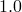

The following are Pyxplot’s most basic plot styles†This is not an exhaustive list; see Section 8.19.2.:
dots – places a small dot at each datum.
points – places a marker symbol at each datum.
lines – connects adjacent data points with straight lines.
linespoints – a combination of both lines and points.
When using the points, linespoints and dots plot styles, the size of the plotted points or dots can be varied by using the pointsize modifier, for example:
set samples 25 plot sin(x) with dots pointsize 10
which would represent data with large dots. The default value of this setting is .
The width of lines can similarly be controlled with the linewidth modifier, and the width of the lines used to draw point symbols can be controlled with the pointlinewidth modifier. For example:
set samples 25 plot sin(x) with points pointlinewidth 2
In addition to setting these parameters on a per-plot basis, their default values can also be changed. The command:
set pointlinewidth 2
would set the default line width used when drawing data points. Both here, and in the plot command, the abbreviation plw is valid.